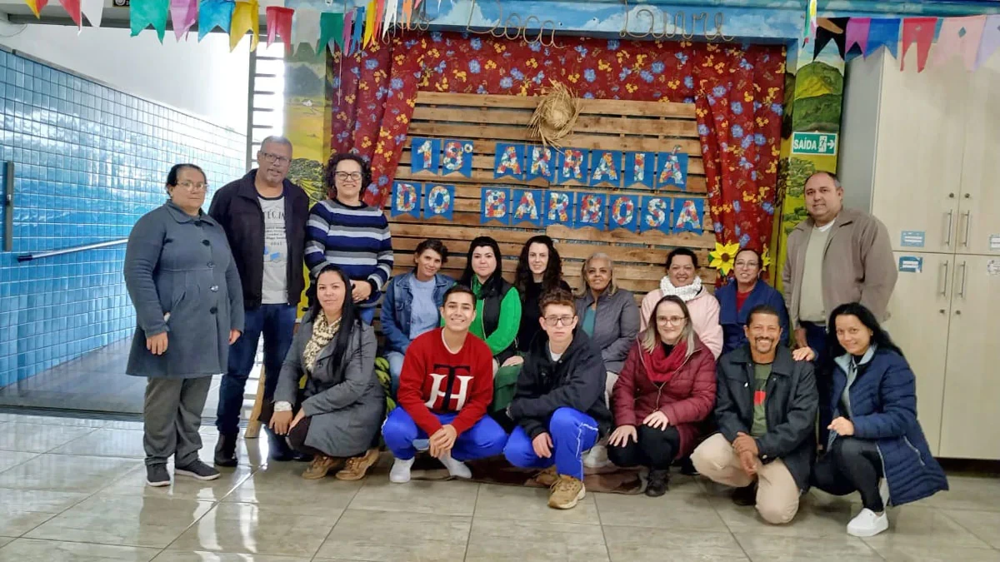
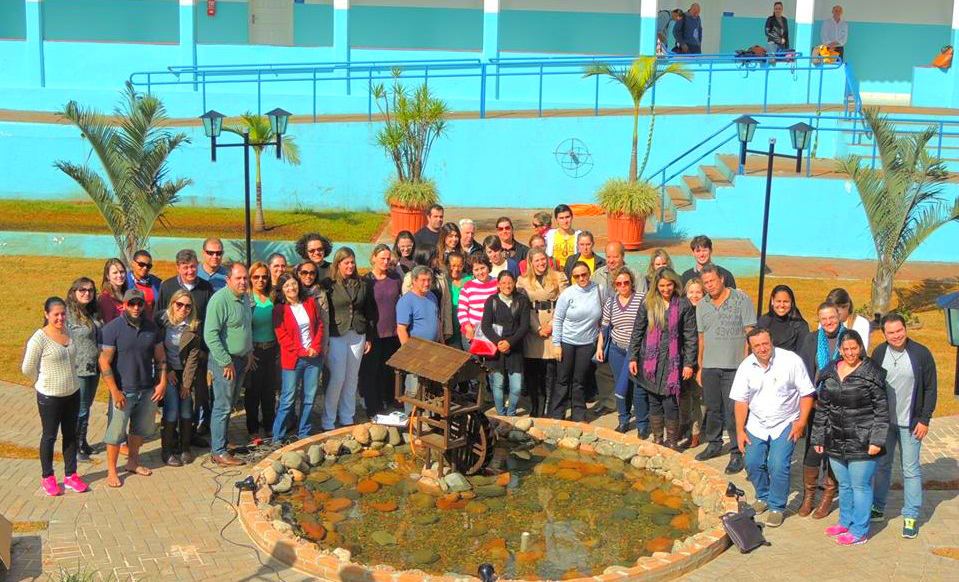
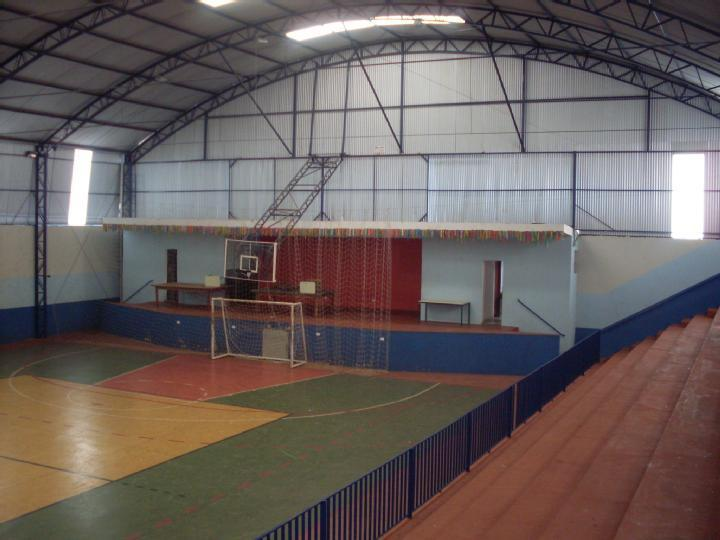

🎉 20° Arraiá do Barbosa 🎊
É com muita alegria que convidamos toda a comunidade para o nosso tradicional Arraiá do Barbosa, que este ano completa sua 20ª edição!
Prepare seu chapéu de palha, vista seu traje caipira e venha curtir com a gente uma noite repleta de comidas típicas, quadrilhas, brincadeiras e muita música boa! Vai ser bão demais, sô!
📅 Data: 8 de julho
🕒 Horário: A partir das 18h
📍 Local: Quadra do Colégio Barbosa Ferraz



← Voltar para a página principal